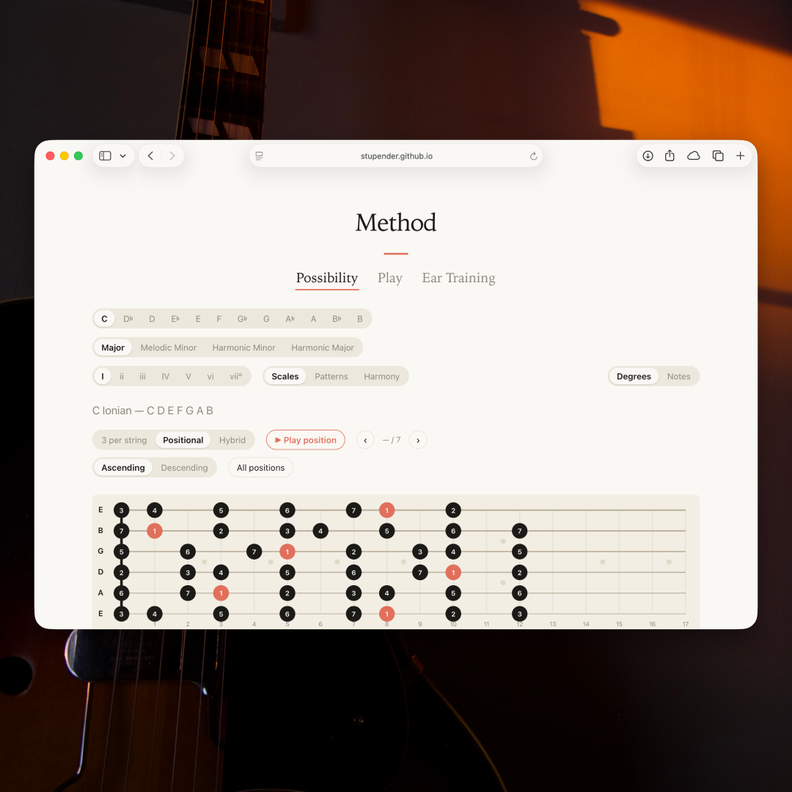
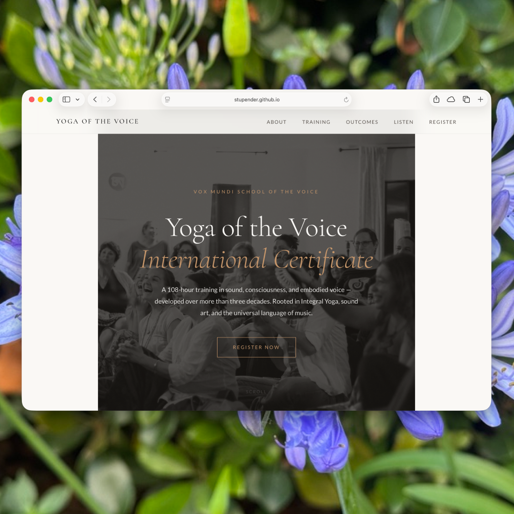
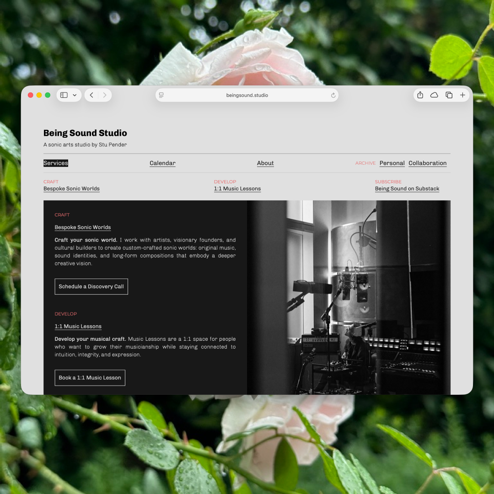
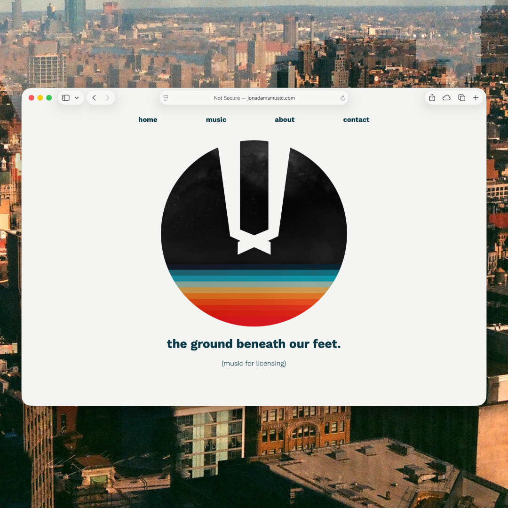
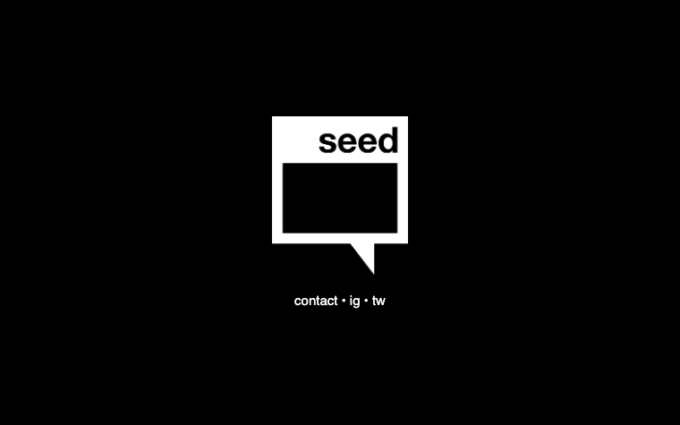
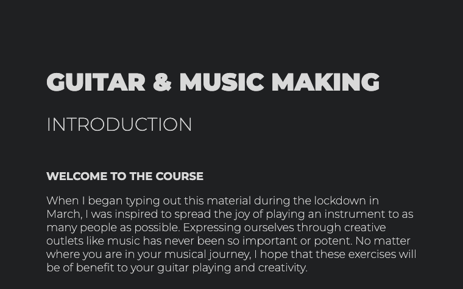
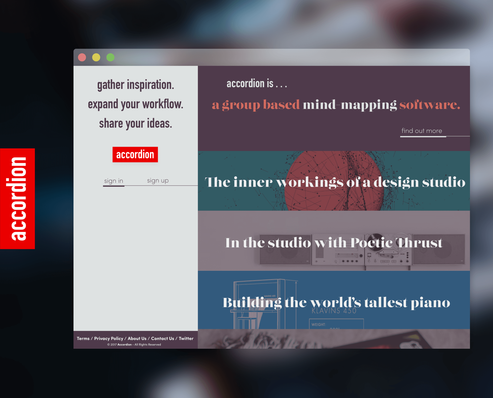
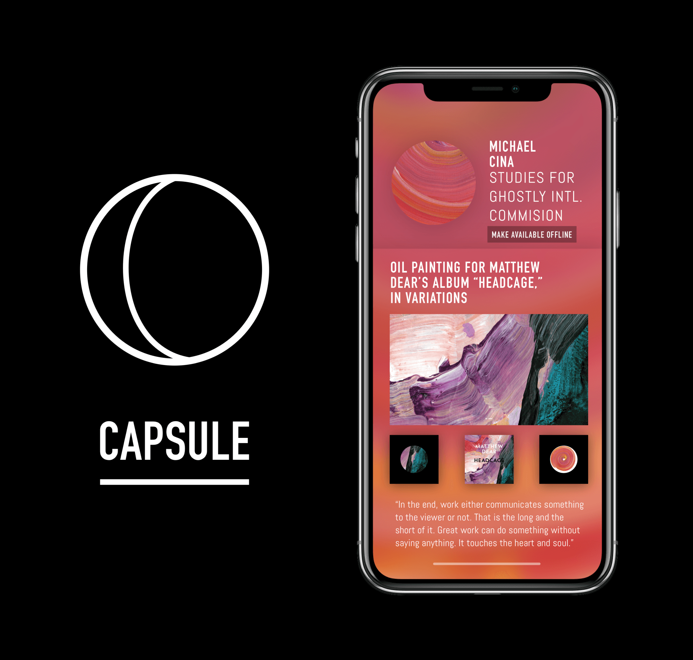

Deployed
Method
An interactive music-theory and guitar-fretboard learning web app — chords, voice-leading, and playback for exploring the instrument.
Chicago · Designer, builder, musician
Designer & builder — UX, front-end, and AI-assisted development.
A UX/UI and front-end background, a decade in creative production, and a deep music domain — now shipping real web and desktop apps with AI-assisted development. Design literacy, the range to know what to make, and the ability to actually ship it.
Selected work

Deployed
An interactive music-theory and guitar-fretboard learning web app — chords, voice-leading, and playback for exploring the instrument.

In active development
A local-first macOS desktop app for re-discovering large music libraries — library scanning and tagging, A–B looping, multi-track layering, and smart playlists.

Live
A responsive marketing landing page designed and built for an international voice-training program.

Live · creative work
My studio site, designed and built end to end — an embedded audio player, an interactive tools page, and a version-controlled codebase.

Concept · reached investor interest
An early-stage startup app concept. I led product design — from user flows (mapped with our PM, Jen) through lo-fi screens to a clickable prototype — and the work reached investor interest.

Design → build
A music-for-licensing site for songwriter Jon Adams, taken end to end — personas and user flows, lo-fi wireframes, brand identity, hi-fi mockups, then the shipped front-end with categorized, streamable playlists.
Also built

A minimal brand landing page for a digital music distribution company — one bold mark, calm typography, still live years on.

A self-authored interactive music-theory book — writing, curriculum, design, and code, built during the 2020 lockdown.
Earlier · UX case studies
From my UX training at Bloc (2017–2018): end-to-end product concepts shaped through user research, prototyping, and usability testing.

A web-based cloud-storage platform built around community and collaboration — bold, human, and workflow-first.

An app for artists to sell and share exclusive content — pairing creators with a designer to keep their vision intact.
Case study available on request
How I work
Design & research
Build
Production & PM
About
I'm a Chicago-based designer, builder, and musician. My background runs from UX/UI design and front-end development to a decade of project management and creative production.
What ties it together is range: I can sit with a problem, design the thing, and build it. The music background isn't a side note — it's where I learned taste, craft, and how to finish work worth shipping.
Explore the creative side at Being Sound.
Get in touch